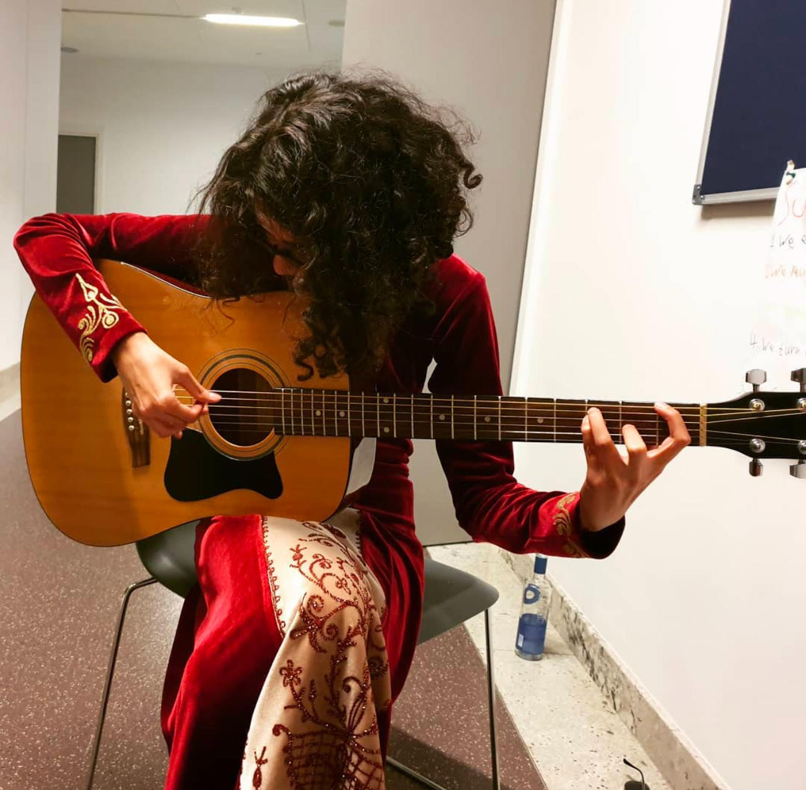

What I Love Doing

Travel
I enjoy exploring new cultures, learning about history, and discovering unique quirks of different places around the world.

Reading
From philosophy to speculative fiction, I love immersing myself in books that broaden my perspective.
Painting
Painting allows me to explore my creativity and bring imaginative concepts to life. It’s a form of self-expression that blends my love for art and design.



Music
With a professional education from two music schools on how to play the piano, the guitar, and classical singing, I enjoy spending my time playing musical instruments both alone and with friends and family.